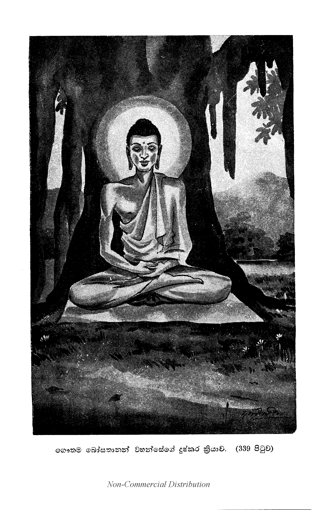

දුෂ්කරක්රියා ප්රශ්නය.
“ස්වාමීනි, නාගසෙනයන් වහන්ස, ශාක්යකුල ප්රසූත වූ ඒ අප මහා බොධිසත්වයන් වහන්සේ ගෘහාභිනික්මන් නික්ම බුද්ධකාරකධර්මයන් සොයනසේක් යම් කලෙක බුදු විය නො හී දුෂ්කරක්රියා කර වදාළසේක් ද, (294) අනික් කාලයෙක එබඳු වූ වීර්යයෙක් එබඳු වූ පරාක්රමයෙක් එබඳු වූ ක්ලේශයුද්ධයෙක් එබඳු වූ මාරසෙනා විධමනයෙක් එබඳු වූ ආහාර වැළකීමෙක් එබඳු වූ දුෂ්කරක්රියාවෙක් නො වූයේ ය. මෙබඳු වූ පරාක්රමයෙන් මදකුත් ආස්වාදයක් නො ලැබ එම චිත්තය ක්රමයෙන් පිරිහෙලා ගෙණ:-
‘න ඛො පනාහං ඉමාය කටුකාය දුක්කරකාරිකාය අධි ගච්ඡාමි උත්තරිමනුස්සධම්මා අලමරියඤාණදස්සන විසෙසං. සියා නු ඛො අඤ්ඤො මග්ගො බොධාය?’
යනාදීන් ‘මම වනාහි මේ කර්කශ වූ දුෂ්කරක්රියාවෙන් උතුම් වූ සර්වඥතා ඥානදර්ශනයට පොහොසත් වූ විශෙෂයකට හෝ උත්තරීමනුෂ්යධර්මයට නො පැමිණෙන්නෙමි. සර්වඥතාඥානාවබොධය පිණිස අනික් මාර්ගයෙක් වන්නේ ම ය’ යි මෙසේ කියා ඒ දුෂ්කරක්රියාමාර්ගයෙන් කලකිරී සැහැල්ලු වූ අනික් මාර්ගයකින් සර්වඥතාඥානයට පැමිණ නැවත ඒ දුෂ්කර වූ ප්රතිපදාවෙන් ම ශ්රාවකයන්ට අනුශාසනා කර වදාරණසේක. සමාදන් කර වදාරණ සේක. ‘මහණෙනි:-
‘ආරභථ නික්ඛමථ-යුඤ්ජථ බුද්ධසාසනෙ,
ධුනාථ මච්චුනො සෙනං-නළාගාරං ච කුඤ්ජරො.’
යන මෙයින් ‘බුද්ධශාසනයෙහි කායචිත්තවීර්යයෙන් යෙදෙවු. කර්මස්ථාන ගෙණ වෘක්ෂමූලසුසානාදියට නික්මෙවු. ක්ලේශයුද්ධ මථනයට පටන් ගණිවු. හුණබටගෘහයක් සුණු විසුණු කරණ හස්තිරාජයෙකු මෙන් මරහුගේ මාරසේනාව නසවු’ කියා දුෂ්කරක්රියාවෙහි ම යොදා වදාරණසේක. ස්වාමිනි, ‘නාගසෙනයන් වහන්ස, තථාගතයන් වහන්සේ අතිදුෂ්කර වූ යම් ප්රතිපදාවකින් තමන් වහන්සේ කලකිරුණුසේක්, නො ඇලුනුසේක්, ඒ ප්රතිපදායෙහි කවර කාරණයකින් ශ්රාවකයන්ට අනුශාසනා කරණසේක් ද? සමාදන් කර වදාරණසේක් දැ?” යි විචාළෝ ය.
“මහරජානෙනි, එකල්හි දු දැනු දු ඒ මධ්යමප්රතිපදාව ම පිළිපැද ඒ මාගෙ ශ්රී මහාබොධිසත්වයන් වහන්සේ ලොවුතුරා සර්වඥතාඥානයට පැමිණ වදාළසේක. එතෙකුදු වුවත්, මහරජානෙනි, ඒ අපගේ ශ්රීමහාබොධිසත්වයන් වහන්සේ සර්වඥතාඥානය පිණිස ශතාසංඛ්යකල්පලක්ෂයක් මුළුල්ලෙහි මනොප්රණිධානය පුරා නවාසංඛ්යකල්පලක්ෂයක් මුළුල්ලෙහි වාක්ප්රණිධානය පුරා සකල ලොකශිවංකර වූ දීපංකර නම් ලොවුතුරා බුදුන්ගේ සම්මුඛයෙන් නියතවිවරණ ශ්රී ලදින් සාරාසංඛ්යකල්පලක්ෂයක් මුළුල්ලෙහි සමත්රිංශත්පාරමීධර්මයන් පූරණය කෙරෙමින් වෙස්සන්තරාත්මභාවයට පැමිණ මෙම සර්වඥතාඥානය පිණිස ම ප්රෙමතර වූ පුත්රදාරාදීන් පරිත්යාග කිරීමෙන් සත්වරෙක මහාපෘථිවි මෙරුයුගන්ධරාදිය කම්පා කොට පාරමිතාධර්මයන් සම්පූර්ණ කෙරෙමින් තුසී නම් දෙවුලොව ඉපිද දසදහසක් සක්වළ දිව්යබ්රහ්මයන්ගේ ආරාධනාවෙන් තුසීපුරයෙන් චුත ව මහාසම්මතපරම්පරානුයාත විසුද්ධසූර්යවංශොද්භූත ව සුද්ධෝදන නම් මහරජානන් නිසා අමායාභූත වූ මහාමායාදෙවීන් කුස (295) ඉපද දසඑකඩමසින් මහාබ්රහ්මයාගේ අතට බිහි ව බඹ සුර නරන් අතින් ක්රමයෙන් ගොස් භූමියට පැමිණ පුණ්යමහිමයෙන් පෘතිවි ප්රදාලනය කොට පැන නැංගා වූ සත්බුමුමහපියුම්පිටින් සත්පියවරක් නිරුත්තර වූ උත්තර දිශාභිමුඛ ව වඩුත් ශ්රීශරීරයෙන් නිකුත් ස්වර්ණාලොකයෙන් තුන්ලෝ උතුරුවා ලොකාන්තරිකමහානරක හිරුදහස් සඳුදහස් නැඟී කලක් සේ එකාලොක කෙරෙමින් සප්තපදව්යතිහාරාවසානයෙහි වැඩ සිට දසදිසා විලොකනය කෙරෙමින් ‘අග්ගො ‘හමස්මි ලොකස්ස, ජෙට්ඨො ‘හමස්මි ලොකස්ස, සෙට්ඨො ‘හමස්මි ලොකස්ස යනාදීන් දසදහසක් සක්වළට ඇසෙන සේ අභීතකෙසරසිංහනාද පතුරුවා සකල ලොකවාසීන් සැණකෙළියෙන් නළවා දිව්යබ්රහ්මමනුෂ්යපෙරහරින් අන්තොපුර ප්රවිෂ්ට ව අසූසාරදහසක් කල්පයෙක පැවැති තොරතුරු අතැඹුල සේ දක්නට සමර්ථ වූ කාළදෙවල නම් සෘෂීන්ගේ ජටාන්තරයෙහි දෙපතුල් තබා වැඳුම් ලදින් ප්රාර්ථිත වූ සිද්ධාර්ථ නමින් ප්රසිද්ධ ව වැඩෙන පුන්සඳක් සේ වැඩී කෘතපුණ්යධාරී වූ යශොධරා දේවීන් ප්රධාන කොට ඇති සතළිස්දහක් බිසෝවරුන් පිරිවරා සෘතුත්රයට යොග්ය වූ ප්රාසාදත්රයෙහි වාසය කොට ශක්ර දෙවෙන්ද්රවිලාසයෙන් එකුන්තිස්හවුරුද්දක් මුළුල්ලෙහි රාජශ්රීසම්පත් අනුභව කෙරෙමින් උද්යානයාත්රායෙහි දෙවියන් දක්වාලූ සතර පූර්ව නිමිත්ත දැක භවත්රයෙහි කලකිරී මහණ වනු කැමැති ව යශොධරාදේවීන් රාහුලකුමාරයන් වැදූ දිනයෙහි බිසෝගෙය කරා ගොස් දොර හැර දකුණු පය එළිපත මත්තෙහි තබා රන්බාපත අත තබා සිට සුවඳවැටපහන් ආලොකයෙන් දිලිසෙන්නා වූ ශ්රීයහන්ගබඩායෙහි අමුණක් සමන්මල් අතුළ ශ්රීයහන් මස්තකයෙහි රාහුලකුමාරයන්ට බඩ දී ගෙණ දෙවඟනක සේ සැතපෙන්නා වූ යශොධරාදේවීන් දැක ‘මා පුතනුවන් වඩා ගෙණ සිඹ සනසා පියා යෙම් දෝ හො?’ යි සිතා ‘එකල යශොධරාවොත් පිබිද යෙති.
මාගේ මහණ වීමට ද අන්තරාය පෙණෙයි. අද රාහුලයන් මුහුණ බලා ගෘහබන්ධනයෙන් බැඳී ගියේ වීම් නම්, මතු තුන්ලෝවාසීහු කාගේ මුහුණ බලා සංසාරබන්ධනයෙන් ගැලවෙන්නාහු ද? පසු ව බුදු වෙලා අවුත් රාහුලයන් දක්නෙමි’ යි සිතා මහමෙර ඔසවන්නා සේ ශ්රීපාදය නගා ගෙණ ප්රාසාදයෙන් බැස කන්ථක නම් අශ්වරාජයා පිටට පැන නැඟී ඡන්න නම් අමාත්යයා හා සමග රාත්රියගේ පස්ළොස්පෑවේලාවෙහි දහසක් පමණ යොධපුරුෂයන් විසින් හැරපියන මහදොරටුවට පැමිණිසේක.
“ඒ වේලෙහි දෙවතාවෝ ‘ස්වාමීනි, අපට නිවන්දොර හැර දුන මැනැවැ’ යි කියා වාසල්දොර හැරපූහ. එකෙණෙහි වශවර්තිමාරයා ‘අහෝ! අද සිද්ධාර්ථකුමාරයා මේ දොරින් පිටත් ව ගියේ වී නම්, ඒකාන්තයෙන් ම ලොවුතුරාබුදු වෙයි. එදවස් මාගේ නරකවල ගිනි නිවයි. හැම නරක සිස් කෙරෙයි. නිවන්පුරය පුරවා ලයි. මාගේ ආඥාව බිඳ මට මහත් හානි කෙරෙයි. මායමකින් ඔහු නවත්වා ලමි’ යි සිතා දිව අවුත් ආකාශයෙහි පෙණී සිට:-
‘මා තික්ඛම මහාවීර-ඉතො තෙ සත්තමෙ දිනෙ,
දිබ්බන්තු චක්කරතනං-අද්ධා පාතු භවිස්සති.’
(296) යන ගාථාවෙන් ‘නො යව මහාවීර පුරාෂොත්තමයානෙනි, මෙයට සත්වන දවස් තොපර දිව්යමයචක්රරත්නය ප්රධාන ව ඇති සප්තවිධරත්නයෙන් යුක්ත වූ චක්රවර්තිරාජ්යය එකාන්තයෙන් ම පහළ වෙයි. දෙදහසක් කොදෙව් පිරිවර කොට ඇති සතරමහදිවයින සහිත මේ සක්වළ මුලුල්ලෙහි චක්රවර්තිරාජ්යශ්රීය කරව. යහළුව, නො යව, නො යව’ යි කියා බාධා කෙළේ ය. එකල බොධිසත්වයෝ අහස බලා ‘තෝ කවරෙහි දැ?’ යි විචාළසේක. මාරයා ඒ අසා ‘මා යහළු සිද්ධාර්ථකුමාරයෙනි, සවන පරනිර්මිතවශවර්ති දිව්යලොකයෙහි මම මාරදිව්යපුත්රයෙමි. මා කීවාක් කරව’ යි කී ය. එවිට මහබෝසතානෝ:-
‘මාර ජානාමහං මය්හං-චක්කස්ස පන සම්භවං,
අනත්ථිකො‘හං රජ්ජෙන-තිට්ඨ ත්වං මාර මා ඉධ.’

‘මාරය, මට චක්රවර්තිරාජ්යය සම්භව වන බව තට වඩා මමත් දනිමි. චක්රවර්තිරාජ්යයෙන් මට ප්රයෝජන නැත්තේ වෙමි. තා සේ සියදහසක් මාරයෝ ආවුත් නවත්වත් මුත් නො වළකින්නෙමි. මාරය, තෝ මට බාධා නො කොට මාගේ මේ දොරකඩ නො ඉඳ පලායව. මම දසදහසක් සක්වළ ගුගුරුවා ලොවුතුරා බුදු වෙම් ම ය. ධර්මදෙශනාවෙන් දසදහසක් සක්වළ උතුරුවාලම්මැ’ යි කියා අභීතගර්ජනා කෙරෙමින් වහසල්දොරටුවෙන් නික්මුනුසේක.
“එකෙණෙහි දසදහසක් සක්වළ පෘථිවිතලය යදණ්ඩෙන් ගැසූ ලොහොතලියක් මෙන් මහහඬින් ගුගුරා කම්පා වි ය. දසදහසක් සක්වළ දිව්යබ්රහ්මසේනාව ‘අපගේ සිද්ධාර්ථ කුමාරයෝ මහබිනික්මන් කරණ සේක. අපි අද රෑ අඳුරු දුරු කොට මහබිනික්මන් පූජා කරම්හ’ යි රැස් ව පෙරට සැටදහසක් දෙවියෝ සැටදහසක් පමණ මැණික්දඬුවැඩපහන් ගෙණ සිටියාහ. දකුණැළයෙන් සැටදහසක් පහන් ගෙණ සිටියාහ. වම්ඇළයෙන් ද සැටදහසක් පහන් ගෙණ සිටියාහ. පිටිපස්හි ද සැට දහසක් පහන් ගෙණ සිටියාහ. සෙසු දෙවියෝ සක්වළගල වටා උරෙන් උර ගසා මැණික්දඬුවැටපහන් ගෙණ සිට ගත්හ. එදා රෑ මේ සා සක්වළ මුළුල්ලෙහි අඳුරෙන් වැසෙන්නා වූ අල්ලක්සාත් අවකාශයෙක් නො වී ය. කුරුකුහුඹුවන් දක්වාත් ඔවුනොවුන්ට පෙණෙන්ට වන. සෙසු දෙවියෝ ද නාගයෝ ද ගරුඬයෝ ද ගන්ධර්වයෝ ද දිවමලින් සුවඳින් පුදන්ට වන්හ. දෙවියන් දමන පරසතු මදාරා මලින් හා අසුරයන් දමන පළොල්මලින් හා නයින් දමන කඩුපුල්මලින් හා ආකාශයෙහි අතුරු නැති ව වස්නා ඝනමහාවර්ෂාවක් සේ මල්දාරා වසින්ට වන. දසදහසක් සක්වළ ගන්ධර්ව දෙවතාවෝ තුන්ගවු දිග භෙරි වීණාදිය කර ලා ගෙණ දිව අවුත් ඉදිරියෙහි අටසැටදහසක් දෙන පඤ්චාංගිකතූර්යනාද කෙරෙමින් යෙති. දකුණු දෙසින් අටසැටදහසක් තූර්යනාද කෙරෙමින් යෙති. වමත් පස ද අටසැට දහසක් දිව්යභෙරිනාද කෙරෙමින් යෙති, පිටිපස්හි ද අටසැටදහසක් භෙරි නාද කෙරෙමින් යෙති. අවශෙෂ වූ ගන්ධර්වයෝ සිටිනට අවකාශ නැත්තෙන් සක්වළ මෝවිට සිසාරා සිට ගත්හ. එදා ඒ භෙරිනාදඝොෂාව මිහිමඬල පටන් අකනිෂ්ඨ (297) බඹලොව දක්වා එකනින්නාද විය.
“මෙසේ අනන්යසාධාරණපුණ්යනිර්මිත වූ ශ්රීමහාබොධිසත්වයන් වහන්සේ දසදහසක්සක්වළ දෙවියන් කරණ පූජා විඳිමින් අසුකුරින් හිසින් දෙවියන් පුදන මල්කඳු පිහිරවපිහිරවා තිස්යොදුන් මග ගෙවා අලුයම්වේලෙහි අනොමා නම් ගංතෙරට පැමිණිසේක් ඡන්න නම් අමාත්යයා ලවා අසුවාලධිය ගන්වා අශ්වයාහට විලිඹින් සන් කළසේක. එවේලෙහි අශ්වරාජතෙම ඡන්නයා හා බොධිසත්වයන් උසුලා ගෙණ අටසියයක් රියන් පළල ඇති ගඟින් එතෙර පැන වැලිතලායෙහි රිදීපිඩක් සේ සිටියේ ය. එවිට මහාබොධිසත්වයන් වහන්සේ ප්රසන්න ව මඟුල් කඩුවෙන් සිගාවරල කපා අහසට දමා මහාබ්රහ්මයා ගෙණවුත් දුන් අට පිරිකර වැලඳ පැලඳි සළු අහසට දමා ඡන්නයාහට සියනුවරට යන සේ සමු දෙමින් එයින් අනුපිය නම් අඹවනයට වැඩ මහණප්රීතිසැපයෙන් සද්දවසක් නිරාහාරයෙන් වැඩ සිට සත්වන දවස් එයින් තිස්යොදුන් මග ගෙවා රජගහනුවරට වැඩ ගෙපිළිවෙළින් සිඟමින් මහාබ්රහ්මයා පැමිණි කලක් මෙන් සියලු නුවර විස්මය පත් කරවා ලත් ආහාර පාණ්ඩව නම් පර්වතච්ඡායායෙහි වැඩ හිඳ වළඳා වදාරා දෙවෙනි දවස් රජගහනුවර පිඬු සිඟන කල වහා දිව අවුත් වැඳ වැතිර රාජ්යසම්පත්තියෙන් පූජා කළ බිම්බිසාර රජහට බුදු ව අවුත් පළමු කොට ධර්මදෙශනා කරණ සේ ප්රතිඥා දී ඒ පාණ්ඩව නම් පර්වතගුහායෙන් නික්ම දනවු සැරිසරණසේක් ආළාර ය උද්දක ය යි කියන ලද තාපසවරුන් කරා ගොස් කීපදවසකින් ම අෂ්ට සමාපත්ති උපදවා ගෙණ ‘මේ තපස්වීන්ගේ සමයෙහිත් නිවන් නැතැ’යි කියා එයින් නික්ම උරුවෙලා නම් දනව්වට වැඩ එහි වසන පස්වගමහණුන් හා සමග සතුටු ව වාසය කෙරෙමින් ‘අද බුදු වෙමි’ ‘සෙට බුදුවෙමි’ යි කිය කියා සාවුරුද්දක් මුළුල්ලෙහි දුෂ්කරක්රියා කරණසේක් මහත් වූ වීර්යයෙන් යුක්ත ව දන්තපන්තියෙන් දන්තපන්තිය තද කොට පිහිටුවා ගෙණ දිවින් තල්ල පැහැර ගෙණ කුසලසිතින් අකුසල සිතට නිග්රහ කෙරෙමින් දෙපක්ෂයෙන් ද ඩා සෙලවෙන[1] තාක් වීර්ය කරත් බුදු විය නො හී ‘මේ නියා වීර්යයෙන් බුදු විය හෙම් දෝ හො?’ යි සිතා මුඛයෙන් නාසිකාවෙන් ආශ්වාසප්රශ්වාසය වළක්වා ගෙණ, වීර්ය කරණසේක. කඹුරුසම්තුඩින් නික්මෙන සුළං සෙයින් මහත් වූ හඬින් උභකර්ණඡිද්රයෙන් වාතය නික්මෙන තාක් දක්වා මහත් වූ දුක්ඛවෙදනාවෙන් දුෂ්කරක්රියා කෙරෙමින් බුදු විය නො හී තවත් නො හැර ම වීර්ය කරණසේක. මුඛයෙන් ද නාසිකායෙන් ද උභයකර්ණශ්රොතයෙන් ද ආශ්වාසප්රශ්වාස වළක්වා ගෙණ බලවත් වූ දුෂ්කරක්රියා කරණසේක්, මහත් පල ඇති පුරුෂයකු තීක්ෂ්ණ වූ යකඩ විදින කටුවකින් මස්තකය විදින්නාක් මෙන් බලවත් වූ දුක්ඛවෙදනා වන තාක් වීර්ය කරපියාත් බුදු විය නො හී තවත් එසේ ම ආශ්වාසප්රශ්වාසය වළක්වා ගෙණ ප්රධානක්ෂම වූ අසල්ලීන වූ වීර්ය කරණසේක් බලවත් වූ පුරුෂයෙකු දැඩි වූ අස්ලොම්යොතකින් බලවත් කොට ශීර්ෂය වෙළන කලක් මෙන් බලවත් වූ දුක්ඛවෙදනා විඳිමින් දුෂ්කරක්රියා කොට පියාත් බුදු විය නො හී එසේ ම ආශ්වාසප්රශ්වාසය වළකා වීර්ය කරණසේක් බලවත් වූ වාතය හිස පැහැර මස්තකය බිඳ (298) යා නො හැකි ව පෙරළා ඇතුළු කුක්ෂියට වැද තීක්ෂ්ණ වූ මස් කපන කැත්තෙන් ඇතුළු ගර්භය කපා ලන්නාක් මෙන් ඉතා බලවත් වූ දුක්ඛ වෙදනා වන තාක් දක්වා ම නො හැර වීර්ය කෙරෙමින් මහත්බල ඇති පුරුෂයන් දෙදෙනෙකුන් දුර්වලතරපුරුෂයෙකු දැඩි කොට අල්වා ගෙණ මහත් වූ ගිනිඅඟුරු රැසෙක්හි ලං කොට තවන කලක් මෙන් සකලශරීරය ඩා සෙලවෙන තාක් දක්වා ආශ්වාසප්රශ්වාසය වළක්වා ගෙණ නිරාශ්වාසක ධ්යානය වඩමින් සාරාසංඛ්යකප්ලක්ෂයක් මුළුල්ලෙහි සර්වඥතා ඥානය පිණිස කර වදාළා වූ වීර්යය මේ ම දුෂ්කරක්රියාවෙන් ම සමස්ත ලොකවාසීන්ට දක්වමින් සකල දිව්යබ්රහ්මාදීන් විස්මය පත් කරවා දුෂ්කර ක්රියායෙහි කෙළ පැමිණපියාත් බුදු විය නුහුනුසේක්, ‘මඳ මඳ කොට ආහාර ගැනීමෙන් වීර්ය කෙරෙමි’ යි සිතා මුං පිසූ යුෂපතක් ලදින් එයිනුදු යැපෙනසේක්, කොල්ලු පිසූ යුෂපතක් ලදින් එයිනුදු යැපෙනසේක්, දවස තලඇටක් සා භොජනයකිනුත් යැපී දවස් යවනසේක්, මිරිස්කැනක් ලද්දාත් තිබ්බටුකැනක් ලද්දාත් එයින් යැපී අතිවීර්ය කරණසේක්, සර්වප්රකාරයෙන් ම ආහාරය වර්ජිත කොට දුෂ්කරක්රියා කරණසේක් ම ය.
“එකල දෙවතාවෝ ‘අපගේ සිද්ධාර්ථකුමාරයෝ ආහාර වැළකීමෙන් නො නසිත්ව’ යි සිතා නවානූදහසක් ලොමකූපයෙන් දිව්යරසඔජස් බහා ලමින් ජීවිතය රක්ෂා කෙරෙති. මහාබොධිසත්වයන් වහන්සේගේ අනන්තපුණ්යනිර්මිත වූ ශ්රීශරීරය ආහාර වර්ජිත කිරීමෙන් දුර්වල වූ කාලවර්ණ වී ය. මනුෂ්යයෝ දැක ‘කාලවර්ණශ්රමණභවත් ගෞතමයන් වහන්සේ ය’ යි කියති. දෙතිස්මහාපුරුෂලක්ෂණයෝ ද ශරීරයෙහි ම සැඟවී ගියාහු ය. දෙසියසොළසක් මංගලලක්ෂණයෙන් විරාජමාන වූ ශ්රීපාදද්වන්දය හා උල්මාසය මස් සිඳී ඔට්ඨපදාකාර වි ය. පිට්ඨිකණ්ටකය ඉඳිඇට විද ඇමුණු වට්ටනාවලියක් මෙන් සන්ධි සන්ධි උස්මිටි වන්නේ ය. ඉලඅස්ථීහු ජීර්ණ වූ ශාලායෙක ගොනැස් මෙන් සෙලවෙන්නාහ. නීලොත්පලදලාකාර සශ්රීක වූ නෙත්රද්වන්දය ගම්භීර වූ ලිඳ පැන්හි දක්නා උදක තාරකාය යි කියන ලද දියබුබුලුදෙකක් සෙයින් අතිගැඹුරු වි ය. පුන් සඳක් වැනි මුහුණුමඬලින් යුක්ත වූ සිරොධාතුව නො මේරූ තිත්ත ලාබුවක් නෙළා ආතපයෙන් වියලු කලක් මෙන් විරූප වි ය. ‘බඩසම අල්වමි’ යි සිතා ගත් අතට වැළක පිටකොන්ද හසු ව යන්නේ ය. ‘පිට අල්වමි’ යි සිතා ගත් අතට බඩසම හසු ව යන්නේ ය. බඩසමත් පිටකටුවත් දෙක එකට ඇලී ගියේ ය. ‘මලමුත්ර කෙරෙමි’ යි කියා ආරම්භ කළ කල භ්රමණ කණ්ටයෙන් විදින කලක් මෙන් බලවත් වූ දුක්ඛවෙදනාවෙන් පෙළී එතැන්හි ම මුණින් වැටී යන්නේ ය. මුඛයෙන් නාසිකාවෙන් ආශ්වාසය කෙරෙමින් අතින් ගාත්ර පිරිමදින කල කුණු වූ මුල් ඇති ලෝමයෝ කයින් ඉපිළ වැටෙන්නාහු ය. සිතූ තැනෙක පය තබාපිය නො හැකි වූ අස්ථි චර්මමාත්ර වූ ශරීරයෙන් ‘අද බුදු වෙමියි, සෙට බුදු වෙමි’ යි සිතසිතා අති දුෂ්කරක්රියා කරණසේක් සමහර විටෙක මුණින් වැටී කල් යවනසේක. ඒ දැක දේවතාවෝ ‘අහෝ! සිද්ධාර්ථකුමාරයන් වහන්සේ බුදු විය නො හී මළාහ’ යි මහාසොකයෙන් හඬා වැලප යෙති, සමහර දෙවතා කෙනෙක් තව ම නො මළාහ. නස්නේ ඇතැ’ යි කියති. සමහර (299) දෙවතා කෙනෙක් ‘සිද්ධාර්ථ කුමාරයෝ නො මළාහ. සිත කයට නඟා ගෙණ හිඳිනාසේක. නො බුදුව මරණ පත් නො වනසේකැ’ යි බලා හිඳිති. සමහර දෙවතාකෙනෙක් සුද්ධෝදනරජ්ජුරුවන් කරා ගොස් ‘මහරජානෙනි, තොප පුතනුවෝ සිද්ධාර්ථකුමාරයෝ අද බුදු වෙමි යි, සෙට බුදු වෙමි’ යි කියකියා මහත් දුෂ්කරක්රියා කෙරෙමින් බුදු විය නො හී මළාහ’ යි කියති. මෙසේ ත්රිභුවනජනවන්දනීය වූ ශ්රී මහාබොධිසත්වයන් වහන්සේ ඉතාමත් වූ දුක්ඛවෙදනා විඳිමින් දුෂ්කරක්රියා කළහ. ආහාරවර්ජිත වූ දුෂ්කරක්රියාවෙන් ඒ මහතානන්ගේ චිත්තයෙහි අතිදුර්වල බව උපන්නේ ය. ඒ චිත්තදුර්වල බව කරණ කොට ගෙණ ඒ මහාබෝසතානන් වහන්සේ සර්වඥතාඥානයට පැමිණ පියන්නට නො හැකි වූසේක්, ‘ආහාරවර්ජිත වූ මෙබඳු වූ වීර්ය්යයෙන් බුදු විය නො හෙමි. එහෙයින් මඳ මඳ කොට වඩ වඩා ආහාරය වළඳමි’ යි සිතා ඒ බොධිසත්වයන් වහන්සේ කබලිංකාහාරය පමණ පමණ කොට සෙවනය කෙරෙමින් පහන්රුකක් ඇවිළගියා සේ බබළන්නා වූ දෙතිස්මහාපුරුෂලක්ෂණයෙන් විරාජමාන වෙමින් එම මධ්යමප්රතිපදාවෙන් ම ගොස් සර්වඥතාඥානයට පැමිණ වදාළසේක.
“මහරජානෙනි, අතීතානාගතවර්තමාන යන කාලත්රයවර්තී වූ සියලු ම තථාගතයන් වහන්සේලාගේ සර්වතාඥානප්රතිලාභය පිණිස එම මධ්යමප්රතිපදාව ම ය. මහරජානෙනි, යම් සේ සකල සත්වයන්ට ආහාරය උපස්තම්භක වන්නේ ය. සියලු සත්වයෝ ආහාරය උපනිශ්රිත වූවාහු සැප අනුභව කරන්නාහු ය. මහරජානෙනි, එපරිද්දෙන් ම සියලු ම තථාගතයන් වහන්සේලාගේ සර්වඥතාඥානප්රතිලාභය පිණිස එම මධ්යමප්රතිපත්තිය ම ය. මහරජානෙනි, ඒ බුදු නො වී ප්රමාද වූ දොෂය තෙම පටන් ගත් වීර්ය්යයාගේත් නො වන්නේ ය. පරාක්රමයාගේත් නො වන්නේ ය. ක්ලේශයුද්ධයාගේත් නො වන්නේ ය. තථාගතයන් වහන්සේ ඒ දුෂ්කරක්රියාසමයෙහි යම් අධිකවීර්ය්යයක් කරණ කොට ගෙණ සර්වඥතා ඥානයට නො පැමිණිසේක් ද, එකල ඒ ආහාරවර්ජිතයාගේ දොෂය ම ය. ඒ ප්රතිපදාව හැමකල ම පටියත්ත ම ය. මහරජානෙනි, යම් සේ පුරුෂයෙක්තෙම මාර්ගයෙහි බලවත් වූ වෙගයෙන් යන්නේ වී නම්, ඒ කාරණයෙන් ඒ පුරුෂතෙම දෙඅත් විනාස වූවාක් මෙන් හෝ වන්නේ ය. පා දඬු ව පීඨසප්පික හෝ වන්නේ ය. අවසඟ ව පෘථිවිතලයෙහි හෝ වැටෙන්නේ ය. කිමෙක් ද, මහරජානෙනි, ඒ පුරුෂතෙම යමක් කරණ කොට ගෙණ අත් බිඳීම් පා බිඳීම් ආදී කිසි ව්යසනයකට පැමිණෙන ලද්දේ වී නම්, මහා පෘථිවියගේ දොෂයෙක් ඇද් දැ?” යි විචාළසේක. “නැත, ස්වාමීන් වහන්ස, මහාපෘථිවිතොම සදා පටියත්ත ම ය. ස්වාමීනි, ඒ පෘථිවියගේ දොෂයෙක් කොයින් ද? ඒ පුරුෂතෙම යම් ශීඝ්රගමනක් කරණ කොට ගෙණ හස්තභෙදනාදියකට පැමිණියේ වී නම් ඒ මේ දොෂය වීර්යයාගේ ම ය” යි කීහ. “මහරජානෙනි, එපරිද්දෙන් ම තථාගතයන් වහන්සේ යමක් කරණ කොට ගෙණ ඒ දුෂ්කරක්රියා සමයෙහි සර්වඥතා ඥානයට නො පැමිණිසේක් ද, මේ දොෂය පටන් ගන්නා ලද වීර්ය්යයාගේත් නො වන්නේ ය. දුෂ්කරක්රියාපරාක්රමයාගේත් නො වන්නේ ය. (300) ක්ලේශයන් හා කළ යුද්ධයාගේත් නො වන්නේ ය. එකල ආහාර වර්ජිතයාගේ ම මේ දොෂය වන්නේ ය. ඒ මධ්යමප්රතිපදාතොම හැම දවස් ම පිළියෙල ව ම පවත්නේ ය. තවද මහරජානෙනි, යම් සේ පුරුෂයෙක්තෙම කිලුටු වූ වස්ත්රයක් වලඳින්නේ ය. ඒ වස්ත්රය ඔහු නොසෝදවන්නේ වී නම්, ඒ දොෂය උදකයාගේ නො වන්නේ ය. උදකය හැම දවස්හි ම පිළියෙළ ව ම පවත්නේ ය. ඒ අලස වූ පුරුෂයාගේ ම මේ දොෂය වන්නේ ය. මහරජානෙනි, එපරිද්දෙන් ම යම් ආහාරවර්ජිතයක් කරණ කොට ගෙණ අප තථාගතයන් වහන්සේ ඒ දුෂ්කරක්රියාසමයෙහි සර්වඥතාඥානයට නො පැමුණුනුසේක් ද, මේ දොෂය වීර්යයාගේත් නො වන්නේ ය. පරාක්රමයාගේත් නො වන්නේ ය. ක්ලේශයුද්ධයාගේත් නො වන්නේ ය. එකල්හි ආහාරවර්ජිතයාගේ ම මේ දොෂය වන්නේ ය. එම මධ්යමප්රතිපදාතොම සදා ම පිළියෙල ව ම පවත්නේ ය. එහෙයින් තථාගතයන් වහන්සේ ඒ මධ්යමප්රතිපදාවෙන් ම තමන්වහන්සේගේ ශ්රාවකයන්ට අනුශාසනා කරණසේක. සමාදන් කරවා වදාරණසේක. මහරජානෙනි, මෙසෙසින් අනවද්ය වූ ඒ ප්රතිපදාතොමෝ සදා පිළියෙල ව පවත්නේ ය” යි වදාළසේක. “යහපත, ස්වාමීනි, නාගසෙනයන් වහන්ස, මෙසේ මේ ප්රශ්නය ද එසේ ම පිළිගන්නෙමි” යි කීහ.
දුෂ්කරක්රියා ප්රශ්නය යි.
-
දෙපක්ෂයෙන් සෙලවෙන ↑